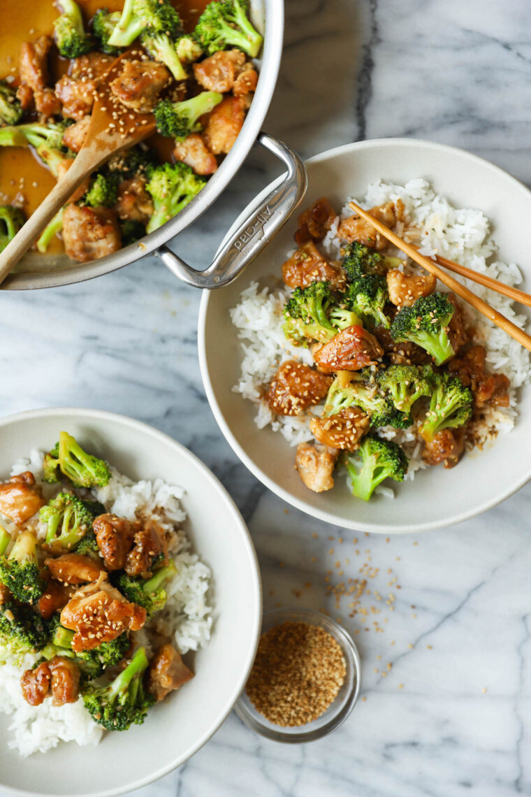

Chicken and Broccoli Stir Fry

Description
The easiest stir-fry you will ever make! With the juiciest, tender chicken bites and sneaked in veggies!
source: https://damndelicious.net/2021/08/13/chicken-and-broccoli-stir-fry/
Ingredients
- 1/2 cup chicken stock
- 1/4 cup oyster sauce
- 1 tablespoon rice wine vinegar
- 1 tablespoon freshly grated ginger
- 3 cloves garlic, minced
- 1 teaspoon Sriracha, optional
- 1 pound boneless, skinless chicken thighs, cut into bite-size pieces
- Kosher salt and freshly ground black pepper, to taste
- 2 tablespoons cornstarch
- 1 tablespoon canola oil
- 1 tablespoon sesame oil
- 3 cups broccoli florets
- 1/2 teaspoon toasted sesame seeds
Directions
- FOR THE CHICKEN STOCK MIXTURE: In a small bowl, whisk together chicken stock, oyster sauce, vinegar, ginger, garlic and Sriracha, if using; set aside.
- Season chicken with 1/2 teaspoon salt and 1/4 teaspoon pepper.
- In a medium bowl, combine chicken and cornstarch.
- Heat canola oil and sesame oil in a large skillet over medium high heat.
- Working in batches, add chicken to the skillet in a single layer and cook until golden brown, about 7-8 minutes. Stir in broccoli and CHICKEN STOCK MIXTURE until broccoli is just tender, about 3-4 minutes.
- Serve immediately, garnished with sesame seeds.